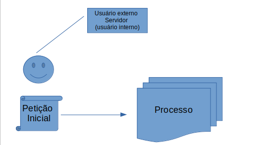
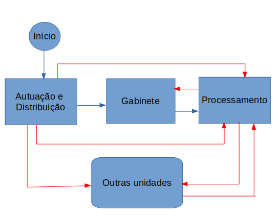

Tramitação processual

Um processo judicial se inicia no PJe da Justiça Eleitoral quando um usuário externo, que pode ser advogado, Ministério Público, Autoridade Policial ou qualquer jurisdicionado, cadastra o processo incluindo os dados e a petição inicial apresentando seu pleito. O processo pode também ser iniciado por um servidor da Justiça Eleitoral com características de usuário interno. Ao finalizar o que denomina-se como protocolo do processo, ocorre a distribuição automática, ou seja, o processo tem o relator designado de acordo com competências e utilizando um mecanismo de sorteio.
O processo, após ser protocolado, pode ser pesquisado dentro do sistema, mas a atuação por parte dos servidores se dará sempre por meio de tarefas de fluxo. Os fluxos são agrupamentos de tarefas onde pode-se mudar a tramitação processual de acordo com os objetivos de cada organização. A definição de fluxo que será utilizada para o processo depende de sua classe judicial, ou seja, o fluxo atribuído à classe em sua configuração será utilizado para apresentar o processo nas tarefas.
Ao ser iniciado, o processo judicial, via de regra, passa por três unidades principais dentro do tribunal: Autuação e Distribuição, Gabinete e Processamento.

Na Autuação e Distribuição, é realizada uma triagem, onde um servidor verifica os dados do processo e encaminha o pleito para análise do relator, ou seja, do Gabinete. No Gabinete, o processo é analisado e são expedidos os atos judiciais. O processo é então encaminhado para a Unidade de processamento, onde são realizados os devidos cumprimentos.
Por vezes, outras unidades precisam se manifestar no processo. O encaminhamento do processo para essas unidades é feito, em geral, pelo Processamento, de acordo com determinações do Gabinete. A autuação pode, em alguns momentos, remeter o processo diretamente para outras unidades.
As unidades por onde passam um processo se traduzem internamente no PJe em papeis e localizações, de forma a limitar a autorização de execução das tarefas a determinados grupos de pessoas.
Abaixo seguem algumas autorizações de acordo com as unidades onde são realizadas as tarefas:
Unidade de autuação e distribuição
| Localização | Papel |
|---|---|
| Secretaria Judiciária SJD | Secretário Judiciário |
| Secretaria Judiciária SJD | Servidor |
| Unidade de Autuação e Distribuição | Coordenador |
| Unidade de Autuação e Distribuição | Chefe de Seção |
| Secretaria Judiciária SJD | Colaborador |
| Unidade de Autuação e Distribuição | Servidor |
| Unidade de Autuação e Distribuição | Colaborador |
Unidade de processamento - principal
| Localização | Papel |
|---|---|
| Secretaria Judiciária SJD | Secretário Judiciário |
| Secretaria Judiciária SJD | Colaborador |
| Unidade de Processamento Judiciário | Coordenador |
| Unidade de Processamento Judiciário | Chefe de Seção |
| Unidade de Processamento Judiciário | Servidor |
| Unidade de Processamento Judiciário | Colaborador |
Corregedoria Unidade de Fiscalização e Cadastro
| Localização | Papel |
|---|---|
| Corregedoria Unidade de Fiscalização e Cadastro | Chefe de Seção |
| Corregedoria Unidade de Fiscalização e Cadastro | Servidor |
| Corregedoria Unidade de Fiscalização e Cadastro | Colaborador |
| Corregedoria Unidade de Fiscalização e Cadastro | Coordenador |
| Administração PJe | Administrador |
Corregedoria - Judiciária
| Localização | Papel |
|---|---|
| Administração PJe | Administrador |
| Corregedoria Unidade Assuntos Judiciários | Coordenador |
| Corregedoria Unidade Assuntos Judiciários | Chefe de Seção |
Corregedoria - Magistrado
| Localização | Papel |
|---|---|
| Ministro | Magistrado |
| Assessoria | Assessor Chefe |
| Corregedoria Unidade de Fiscalização e Cadastro | Coordenador |
| Corregedoria Unidade de Fiscalização e Cadastro | Chefe de Seção |
O principal fluxo por onde se inicia um processo no PJe é o Fluxo Originárias, mas quando um processo é protocolado em classes de corregedoria, o fluxo é o Fluxo principal de corregedoria.
Fluxo - Classes Originárias
Este fluxo define o fluxo básico de tarefas pelas quais passa um processo. É a porta de entrada no PJe para classes que não são de corregedoria.
Ao entrar nesse fluxo, caso não tenha havido no processo movimento de decisão terminativa (que é o caso de processos que acabaram de ser protocolados) o sistema encaminha o processo para a primeira tarefa, Verificar e Certificar Dados do Processo. Caso o processo já tenha tido movimento de decisão terminativa lançado, o sistema encaminha o processo para o Verificar Pendências
Verificar e Certificar dados do processo
Responsabilidade: Unidade de autuação e distribuição
Um processo de uma classe não corregedoria entra no PJe por meio do Fluxo Originárias na tarefa Verificar e Certificar dados do processo.
O processo, seguindo o fluxo padrão, cairá na tarefa Remeter Processo
Remeter Processo
Responsabilidade: Unidade de autuação e distribuição
A partir dessa tarefa, há a possibilidade de Remeter à Unidade de Fiscalização e Cadastro Corregedoria. O processo irá para o fluxo principal de corregedoria. Com essa transição, o fluxo originárias será encerrado e o único fluxo do processo será o da corregedoria.
Verificar Pendências
Responsabilidade: Unidade de processamento
A partir da tarefa Verificar Pendências, também há a possibilidade de se acionar a corregedoria. As possibilidades são:
- Remeter à Unidade de Assuntos Judiciários - Corregedoria
Lança movimento 60044 e remete o processo para o fluxo Fluxo - Processar Atividades no Processo - Corregedoria
Ao retornar, dependendo do que houve na execução. o caminho vai ser diferente. Se houve determinação para envio para o gabinete, o processo vai para [gab corregedoria]. Se não houve, o sistema verifica se houve determinação para arquivamento e envia para [realiza baixa]. Se não houve determinação para arquivamento, testa encaminhar SJD e volta pro [verificar pendências] ou então vai pro término.
- Remeter ao Gabinete do Corregedor
Faz com que o fluxo de gabinetes seja iniciado no gabinete da corregedoria, sem redistribuir o processo. É lançado o movimento de remetidos os autos ao corregedor.
- Remeter à Unidade de Fiscalização e Cadastro Corregedoria
O processo irá para o fluxo principal de corregedoria. Com essa transição, o fluxo originárias será encerrado e o único fluxo do processo será o da corregedoria.
Fluxo principal corregedoria
Este fluxo define o fluxo básico de tarefas pelas quais passa um processo de corregedoria. É a porta de entrada no PJe para classes que são de corregedoria.
Ao iniciar o fluxo, o sistema estabelece o campo pessoa relator. Esse campo aparece nos autos digitais, ao exibir os detalhes do processo. Em seguida, o processo é encaminhado para Verificar dados - Processo Corregedoria
Verificar dados - Processo Corregedoria
Responsabilidade: Corregedoria - Unidade de fiscalização e cadastro
É uma tarefa de triagem. Ela contém o campo objeto do processo, que deve ser preenchido. O servidor pode, verificando que o processo está OK, encaminhar para o gabinete. O encaminhamento para o gabinete pode ser diretamente para uma decisão colegiada - Elaborar decisão colegiada - inicia fluxo de decisão colegiada ou para decisão monocrática - Elaborar Decisão Monocrática - inicia fluxo de preparação de ato judicial. Ao retornar do gabinete, se não tiver sido realizada decisão, o sistema encaminha o processo para o Verificar pendências. Caso contrário, o processo vai para o cumprimento de determinações.
Além disso, o servidor pode encaminhar para fazer uma retificação dos dados do processo, onde ele deverá também inserir uma certidão informando as alterações. Ele faz isso por meio da transição Remeter ao Certificar e alterar dados, que deixará o processo na tarefa Certificar e alterar dados - Processo Corregedoria.
O servidor tem a opção de utilizar a transição Remeter à SJD, que encerra fluxo da corregedoria e inicia fluxo originárias, lançando movimento (60005).
Remeter ao cumprimento de determinações - inicia fluxo de cumprimento determinações corregedoria. Finalizado, retorna ao verificar pendências - processo corregedoria
Observações para ajuste:
- Tem movimentar em lote, mas a definição do objeto não é em lote, ou seja, o processo pode ser tramitado sem que o objeto seja preenchido.
- Não está configurado impedimento para tramitar quando o objeto não for preenchido
Certificar e alterar dados - Processo Corregedoria
Responsabilidade: Corregedoria - Unidade de fiscalização e cadastro
Nessa tarefa, o servidor pode retificar os dados do processo. O objeto também está disponível para edição.
Os tipos de documentos disponíveis para edição são:
O servidor tem acesso a eles desde que tenha papel vinculado ao tipo de documento.
O servidor pode utilizar a opção de editar uma certidão de retificação em lote, ou seja, construir a certidão com conteúdo semelhante para todos os processos do lote selecionado de uma só vez. O servidor também pode assinar em lote as certidões já construídas, caso detenha papel de assinatura para o tipo de documento construído. A assinatura em lote ficará disponível na opção Assinaturas do painel do usuário.
As transições possíveis são:
-
Remeter ao verificar dados - retorna o processo para Verificar dados - Processo Corregedoria
-
Remeter ao Cumprimento de Determinações - inicia fluxo de cumprimento determinações corregedoria. Finalizado, retorna ao verificar pendências - processo corregedoria
-
Remeter à SJD, que encerra fluxo da corregedoria e inicia fluxo originárias, lançando movimento (60005).
-
Encaminhar para o gabinete - O encaminhamento para o gabinete pode ser diretamente para uma decisão colegiada - Elaborar decisão colegiada - inicia fluxo de decisão colegiada ou para decisão monocrática - Elaborar Decisão Monocrática - inicia fluxo de preparação de ato judicial. Ao retornar do gabinete, se não tiver sido realizada decisão, o sistema encaminha o processo para o Verificar pendências. Caso contrário, o processo vai para o cumprimento de determinações.
O sistema permite que o usuário envie o processo para 'Remeter ao gabinete sem certificar e para Remeter ao Cumprimento de Determinações sem que a certidão seja assinada.
Caso o usuário assine uma certidão, o sistema lançará o movimento de juntada vinculado à certidão e enviará o processo para a tarefa Verificar Pendências - Processo Corregedoria
Observações para ajuste: - tem movimentar em lote, mas tarefas com editor de texto não devem conter essa opção. - tem um aviso sem conteúdo - Remeter ao gabinete sem certificar não existe, tinha que liberar as transições elaborar decisão monocrática e elaborar decisão colegiada sem obrigar preencher certidão
Verificar pendências - Processo Corregedoria
Responsabilidade: Corregedoria - Unidade de fiscalização e cadastro
Essa tarefa é de encaminhamento. Ela exibe os documentos do processo e permite realização de encaminhamento em lote. As possibilidades são:
-
Remeter à SJD, que encerra fluxo da corregedoria e inicia fluxo originárias, lançando movimento (60005).
-
Encaminhar para o gabinete - O encaminhamento para o gabinete pode ser diretamente para uma decisão colegiada - Elaborar decisão colegiada - inicia fluxo de decisão colegiada ou para decisão monocrática - Elaborar Decisão Monocrática - inicia fluxo de preparação de ato judicial. Ao retornar do gabinete, se não tiver sido realizada decisão, o sistema encaminha o processo para o Verificar pendências. Caso contrário, o processo vai para o cumprimento de determinações.
-
Remeter ao TSE desde que a aplicação seja de segundo grau, que faz com que o processo vá para o fluxo de remessa para instância superior - Corregedoria. Caso o processo retorne do fluxo de remessa, será encaminhado para o Verificar Pendências - Processo Corregedoria
-
Arquivar processo - lança movimento e envia processo para Manter Processos Arquivados - Processo Corregedoria
-
Devolver Processo Corregedoria a Origem, que coloca o processo na tarefa Devolver Processo Corregedoria a Origem
Manter Processos Arquivados - Processo Corregedoria
Responsabilidade: Corregedoria - Unidade de fiscalização e cadastro
Essa tarefa é o arquivo do processo. Ela exibe os documentos do processo e sua tramitação para ser realizada em lote. A partir dela, o servidor pode:
-
Desarquivar processos, que lançará o movimento 893 e enviará o processo para a tarefa Analisar processo desarquivado
-
Encaminhar o processo para a tarefa Manter Processos Devolvidos a Origem
Manter Processos Devolvidos a Origem
Responsabilidade: Corregedoria - Unidade de fiscalização e cadastro
Essa tarefa é uma tarefa de arquivo. Ela serve para diferenciar processos arquivados e que tramitaram normalmente na instância dos processos que foram arquivados por terem sido devolvidos à origem. Ela exibe os documentos do processo e sua tramitação para ser realizada em lote. A partir dela, o servidor pode:
-
Desarquivar processos, o que enviará o processo para a tarefa Verificar pendências da corregedoria
-
Manter Processos Arquivados - Processo Corregedoria - envia processo para Manter Processos Arquivados - Processo Corregedoria
Analisar processo desarquivado
Responsabilidade: Corregedoria - Unidade de fiscalização e cadastro
Nessa tarefa, o servidor poderá ver os documentos processuais e poderá utilizar tramitação em lote.
A partir dela, o servidor pode:
-
Remeter ao Cumprimento de Determinações Corregedoria
-
Remeter à SJD, que encerra fluxo da corregedoria e inicia fluxo originárias, lançando movimento (60005).
-
Encaminhar para o gabinete - O encaminhamento para o gabinete pode ser diretamente para uma decisão colegiada - Elaborar decisão colegiada - inicia fluxo de decisão colegiada ou para decisão monocrática - Elaborar Decisão Monocrática - inicia fluxo de preparação de ato judicial. Ao retornar do gabinete, se não tiver sido realizada decisão, o sistema encaminha o processo para o Verificar pendências. Caso contrário, o processo vai para o cumprimento de determinações.
-
Remeter ao TSE desde que a aplicação seja de segundo grau, que faz com que o processo vá para o fluxo de remessa para instância superior - Corregedoria. Caso o processo retorne do fluxo de remessa, será encaminhado para o Verificar Pendências - Processo Corregedoria
-
Arquivar processo - lança movimento e envia processo para Manter Processos Arquivados - Processo Corregedoria
-
Devolver Processo Corregedoria a Origem, que coloca o processo na tarefa Devolver Processo Corregedoria a Origem
-
Encaminhar o processo para a tarefa Manter Processos Devolvidos a Origem
Devolver Processo Corregedoria a Origem
Responsabilidade: Corregedoria - Unidade de fiscalização e cadastro
É uma tarefa de devolução do processo a outra instância.
Ela apresenta um aviso pedindo que o usuário, antes de devolver o processo, verifique se não há expedientes abertos ou tarefas em andamento, de modo a evitar que o processo seja encaminhado sem o devido cumprimento. A tela da tarefa permite a seleção do motivo da devolução e o acionamento do botão “Retorno do processo à origem”. O usuário pode também desistir da tarefa, retornando ao Verificar pendências. Se selecionar o botão de retorno do processo à origem, o sistema verificará se há documentos não assinados para que o usuário possa desistir da execução da tarefa, se for o caso. Na confirmação da execução, o sistema retornará o processo para a última instância de origem (se veio do TSE, retornará para o TSE, se veio do primeiro grau, retornará para o primeiro grau, se veio do TRE, retornará ao TRE que enviou). O sistema lancará o movimento de baixa e deixará o processo bloqueado na tarefa Manter Processos Devolvidos a Origem.
Fluxo - Cumprimento de determinação - Corregedoria
Este fluxo contém encaminhamentos para cumprimentos diversos. Inicialmente, ele envia o processo para a tarefa Analisar Determinação Processo Corregedoria.
Analisar Determinação Processo Corregedoria
Responsabilidade: Corregedoria - Unidade de fiscalização e cadastro (não habilitada para os administradores do sistema)
Essa tarefa exibe a última decisão terminativa do processo. A tramitação em lote está habilitada.
O servidor tem as seguintes possibilidades:
-
Elaborar documentos - que envia o processo para a tarefa Elaborar documentos - Processo Corregedoria
-
Verificar controle de prazos - encaminha o processo para o Fluxo - Controle de Prazos - Corregedoria. Finalizado o fluxo, o processo retorna para a tarefa atual.
-
Preparar comunicação - encaminha o processo para o Fluxo - Ato de Comunicação - Corregedoria. Finalizado o fluxo, o processo retorna para a tarefa atual.
-
Nada mais a cumprir - Finaliza o fluxo e retorna o processo para a tarefa de onde tinha vindo.
Elaborar documentos - Processo Corregedoria
Responsabilidade: Corregedoria - Unidade de fiscalização e cadastro (não habilitada para os administradores do sistema)
Essa tarefa permite a elaboração de documentos. Os tipos de documento permitidos são Ofício, Certidão, Memorando e Ata de Audiência
O servidor tem acesso a eles desde que tenha papel vinculado ao tipo de documento.
Na tarefa, para servidores com papel de assinatura para o tipo de documento selecionado, há a possibilidade de assinar o documento já construído em lote. Se o documento já tiver sido construído, ele ficará disponível para assinatura em lote na opção Assinaturas do painel do usuário.
O usuário pode utilizar a transição Retornar sem que o documento tenha sido preenchido. Isso fará com que o processo vá para Analisar Determinação Processo Corregedoria. Se assinar o documento na própria tarefa, o sistema também encaminhará o processo para o Analisar Determinação Processo Corregedoria.
Se o usuário selecionar a transição Encaminhar para assinatura do Corregedor, o processo é encaminhado para a tarefa Assinar documentos - Processo Corregedoria.
Há também a possibilidade de utilizar a transição Desbloquear editor. Essa transição foi inserido para corrigir defeitos de outras tarefas de edição de documentos, que guardam o documento criado indevidamente para recuperação em unidades não pertinentes. Se isso ocorrer, o documento de outra unidade é recuperado assinado no editor da tarefa atual e o servidor não consegue construir seu próprio documento. Assim, ele pode utilizar a transição para carregar o editor sem o documento indevido, prosseguindo com a construção de seu próprio documento.
Ao sair da tarefa, o documento criado é apagado da memória do fluxo, ou seja, tarefas seguintes não vão carregar o documento para assinatura.
Observações para ajuste:
- Ao encaminhar para assinatura do corregedor, o documento criado não é recuperado na assinatura.
- Assinar documentos - Processo Corregedoria
Responsabilidade: Corregedoria - Magistrado
Essa tarefa permite a elaboração de documentos. Os tipos de documento permitidos são Ofício, Certidão, Carta de ordem, Mandado, Intimação, Edital, Informação e Despacho de Ofício
Os modelos de documento permitidos são: 85,86,87,88,89,90,91,92,93,94,95,96,97,98,99,100,101,102,104,105,106,113,121,131,132,136,114,142,143,144
Na tarefa, para servidores com papel de assinatura para o tipo de documento selecionado, há a possibilidade de assinar o documento já construído em lote. Se o documento já tiver sido construído, ele ficará disponível para assinatura em lote na opção Assinaturas do painel do usuário.
O servidor pode utilizar a transição Devolver para correção que deixará o processo de volta na tarefa Elaborar documento - Processo Corregedoria.
Caso o usuário assine o documento, o sistema lança o movimento de juntada e envia o processo para a tarefa Analisar Determinação Processo Corregedoria.
Observações para ajuste:
- Dispensa requeridos está em transição não existente no Criar tarefa
Fluxo - Ato de Comunicação - Corregedoria
Fluxo - Remessa para Instância Superior - Corregedoria
Os fluxos de remessa são configurados de forma similar, permitindo que se utiliza a tarefa de remessa para que uma instância do PJe da Justiça Eleitoral envie processos para outra instância.
O fluxo de remessa da corregedoria, ao ser iniciado, verifica se o processo é das classes Duplicidade/Pluralidade de Inscrições - Coincidências (CO 12553), Regularização de Situação do Eleitor (RS 12063) ou Direitos Políticos (DP 12064) e envia para a tarefa Remeter ao TSE - Corregedoria. Se não for dessas classes, o sistema envia o processo para a tarefa Remeter ao TSE - Processo Corregedoria. São tarefas similares, mas executadas por perfis diferentes.
O usuário pode selecionar a opção Cancelar, o que finalizará o fluxo de remessa e retornará o processo para a tarefa que tinha acionado o fluxo.
Remeter ao TSE - Corregedoria
Responsabilidade: Corregedoria - Unidade de fiscalização e cadastro
A tarefa permite que se protocole um novo processo no destino, com classes e assuntos específicos e também com novas configurações de partes. As classes exibidas são as classes passíveis de serem recebidas como recurso configuradas no destino. Caso a classe selecionada esteja configurada no destino com a marcação “exige numeração própria”, um novo número de processo será gerado. O novo processo conterá uma cópia dos documentos do processo originário, preservando os dados de assinatura originais.
Após a confirmação, o sistema lançará o movimento de remessa conforme o destino selecionado (TSE ou Zona eleitoral) e manterá o processo em Aguardando apreciação pela instância Superior - Corregedoria bloqueado para novas petições ou edições.
O usuário pode selecionar a opção Cancelar, o que finalizará o fluxo de remessa e retornará o processo para a tarefa que tinha acionado o fluxo.
Remeter ao TSE - Processo Corregedoria
Responsabilidade: Corregedoria - Judiciária
A tarefa permite que se protocole um novo processo no destino, com classes e assuntos específicos e também com novas configurações de partes. As classes exibidas são as classes passíveis de serem recebidas como recurso configuradas no destino. Caso a classe selecionada esteja configurada no destino com a marcação “exige numeração própria”, um novo número de processo será gerado. O novo processo conterá uma cópia dos documentos do processo originário, preservando os dados de assinatura originais.
Após a confirmação, o sistema lançará o movimento de remessa conforme o destino selecionado (TSE ou Zona eleitoral) e manterá o processo em Aguardando apreciação pela instância Superior - Processo Corregedoria bloqueado para novas petições ou edições.
Aguardando apreciação pela instância Superior - Corregedoria
Responsabilidade: Corregedoria - Unidade de fiscalização e cadastro
Essa tarefa armazena os processos que foram enviados para outra instância pela Unidade de Fiscalização e Cadastro. Eles permanecem bloqueados para tramitação. Se o processo retorna da instância para onde foi enviado, o sistema automaticamente desbloqueia o processo e o tramita para a tarefa Recebimento de instância Superior - Corregedoria.
Aguardando apreciação pela instância Superior - Processo Corregedoria
Responsabilidade: Corregedoria - Judiciária
Essa tarefa armazena os processos que foram enviados para outra instância pela Unidade de Assuntos Judiciários. Eles permanecem bloqueados para tramitação. Se o processo retorna da instância para onde foi enviado, o sistema automaticamente desbloqueia o processo e o tramita para a tarefa Recebimento de instância Superior - Processo Corregedoria.
Recebimento de instância Superior - Corregedoria
Responsabilidade: Corregedoria - Unidade de fiscalização e cadastro
Essa tarefa notifica o servidor da unidade de fiscalização e cadastro que o processo retornou da instância para onde tinha ido. A partir dela, o servidor finaliza o fluxo de remessa e retorna o processo para a tarefa que o chamou.
Recebimento de instância Superior - Processo Corregedoria
Responsabilidade: Corregedoria - Judiciária
Essa tarefa notifica o servidor da unidade de assuntos judiciários que o processo retornou da instância para onde tinha ido. A partir dela, o servidor finaliza o fluxo de remessa e retorna o processo para a tarefa que o chamou.